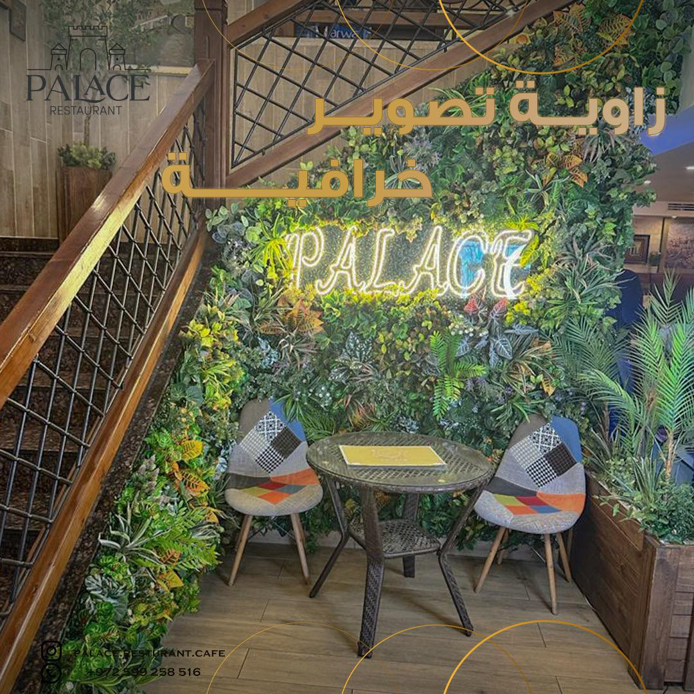
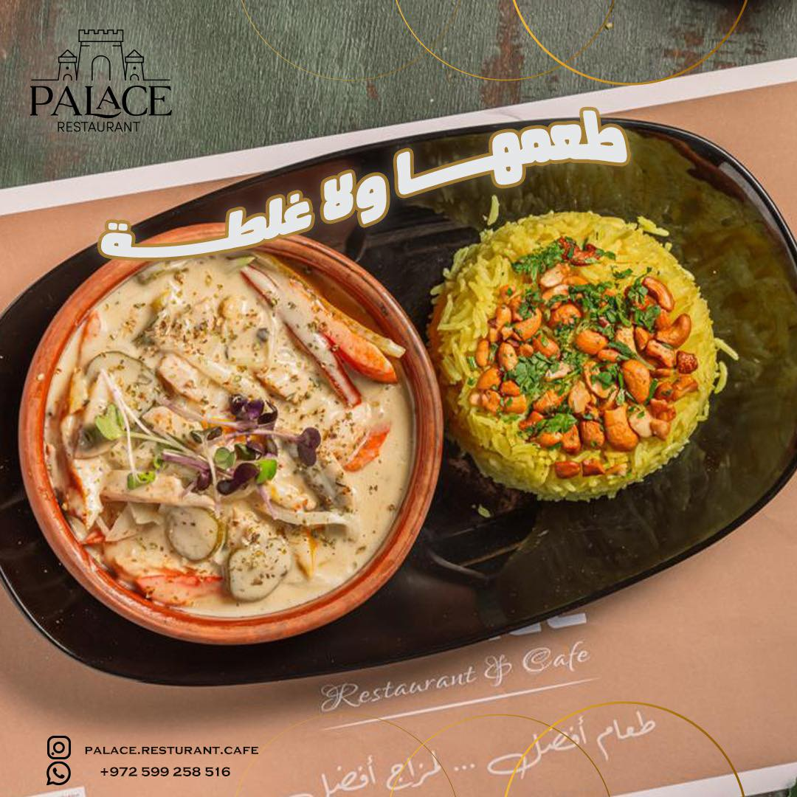

Palace Restaurant in Tulkarm is another popular dining establishment in the city. Known for its elegant ambiance and delectable cuisine, Palace offers a diverse menu featuring a blend of traditional Palestinian dishes and international favorites. The restaurant prides itself on providing guests with a memorable dining experience, combining top-notch hospitality with delicious food. Whether you're craving traditional Palestinian cuisine or international fare, Palace Restaurant aims to satisfy diverse palates. With its inviting atmosphere and attentive service, Palace Restaurant is a favored spot for locals and tourists alike. Whether you're looking to enjoy a casual meal with friends or celebrate a special occasion, Palace offers a welcoming environment for all diners.
 